Actividad 2.3 - Proxy inverso con Nginx
Autor: Manuel Gómez Ruiz
Asignatura: Despliegue de Aplicaciones Web
Fecha: 17/10/2024
Curso: 2º de Desarrollo de Aplicaciones Web
Práctica 2.3 - Proxy Inverso con Nginx
Objetivo de la práctica: Configurar un proxy inverso, que permitirá proteger a nuestro servidor de los clientes, evitando posibles ataques DDoS al servidor. De esta manera, la IP del servidor quedará oculta mientras que accederemos a los proxys, que se encargarán de redireccionar y balancear el tráfico entre varios servidores.
Configuraciones
Servidor Web
Primero, vamos a clonar la máquina virtual que contiene nuestro servidor Nginx, para crear un nuevo servidor que funcionará como proxy inverso.
Para ello, haz click derecho sobre tu servidor Debian y selecciona Clonar, introduce el nombre de la nueva máquina virtual, elige la carpeta donde se guardará y cambia la política de dirección MAC seleccionando la opción Generar nuevas direcciones MAC para todos los adaptadores de red.
Esto es importante para asegurar que el proxy y el servidor tengan IPs distintas, lo cual es necesario para la configuración.
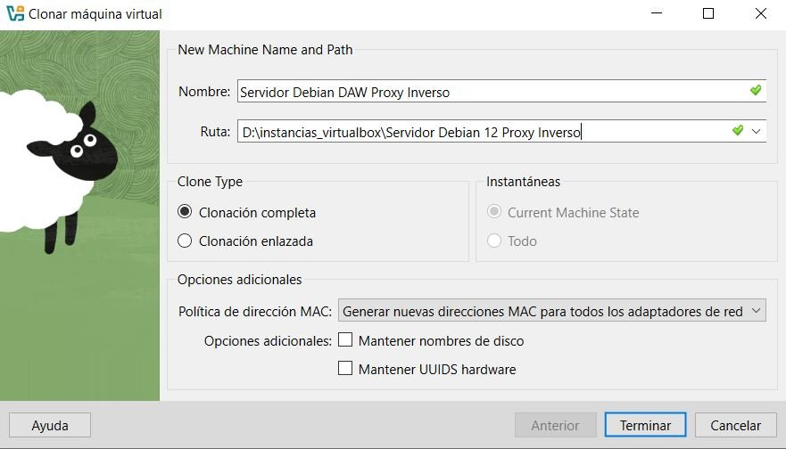
Cambia el nombre que tuviera el archivo de configuración de nuestro servidor Nginx por el de webserver, el cual es una convención para facilitar la administración, usa el comando: sudo mv /etc/nginx/sites-available/nombre-servidor /etc/nginx/sites-available/webserver
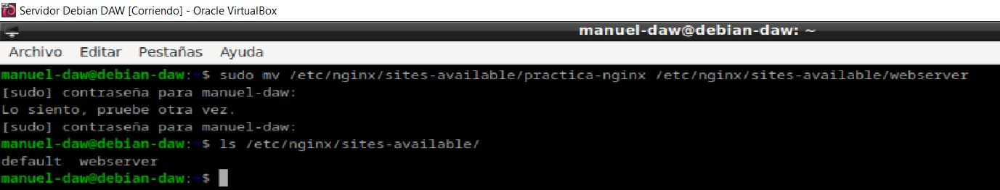
Cambiar el nombre del sitio web dentro de este archivo de configuración, para ello usa el comando sudo nano /etc/nginx/sites-available/nombre-servidor, y modifica el nombre en la directiva server_name,

Ahora vamos a eliminar el link simbólico antiguo con el comando unlink nombre_del_link dentro de la carpeta sites-enabled y crear el nuevo para el nuevo nombre de archivo.
Eliminamos el anterior navegando hasta sites_enabled y usando el comando unlink, después comprueba que no aparezca con ls -l
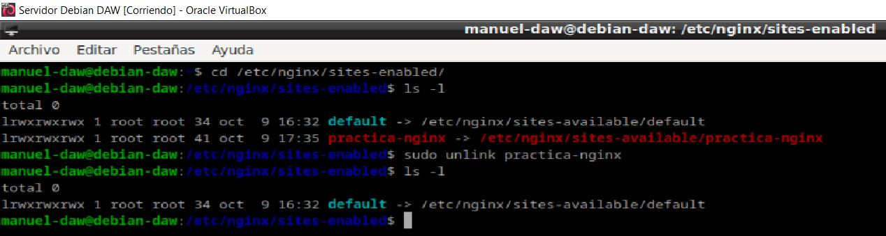
Creamos el nuevo enlace simbólico.
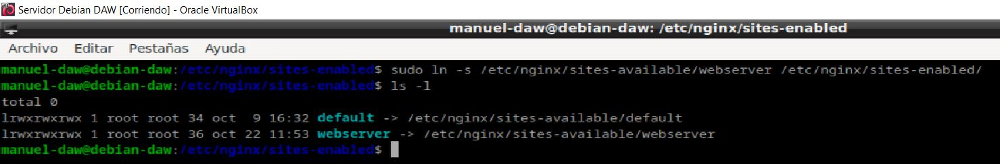
En el archivo de configuración del sitio web, en lugar de hacer que el servidor escuche en el puerto 80, cambiadlo al 8080, para acceder a el vuelve a introducir el comando sudo nano /etc/nginx/sites-available/webserver.
Esto lo haremos para que todo quede más diferenciado y os quede más claro que la petición está pasando por el proxy inverso y llega al servidor web destino.
Reinicia Nginx para aplicar los cambios y comprueba el estado del servicio, sudo systemctl restart nginx y sudo systemctl status nginx.
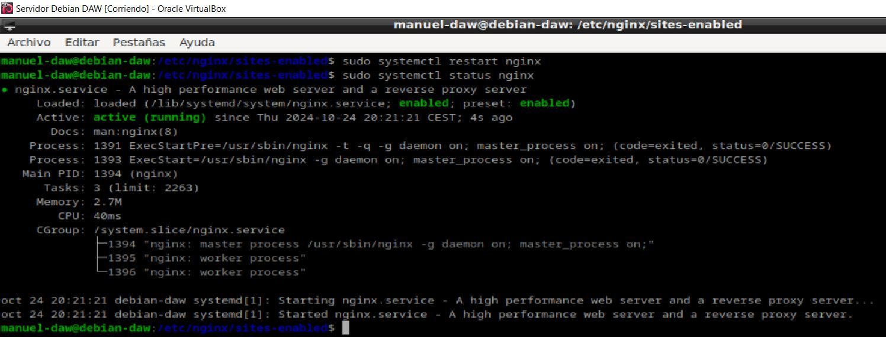
Nginx Proxy Inverso
Borramos el archivo de configuración y el enlace simbólico que fue clonado desde nuevo servidor, y lo sustituimos por un nuevo archivo de configuración que hará que este nuevo servidor actue como proxy, comando sudo nano ejemplo-proxy
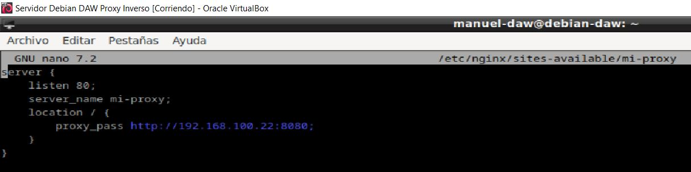
Hacemos el enlace simbólico para que este archivo de configuración se active, y que así cuando hagamos el reinicio del servidor funcione.
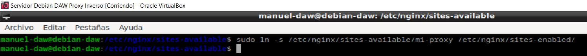
Reiniciamos el servicio Nginx para surtir los cambios.
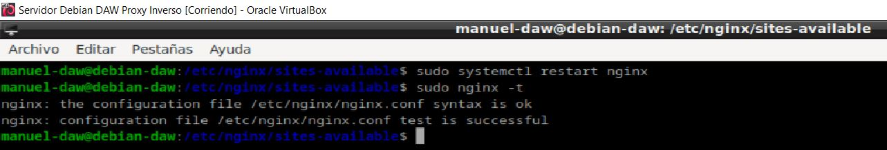
Añadimos al cliente la IP del proxy ejemplo-proxy junto a su server_name, accediendo a la ruta C:\Windows\System32\drivers\etc\hosts, con esto ya deberíamos poder acceder a la página web mediante el proxy.
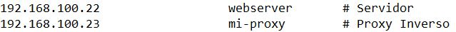
Comprobamos que podemos acceder desde el cliente al servidor backend a través del proxy. Esto significa que el tráfico web esta siendo correctamente dirigido desde el cliente al proxy, y el proxy está reenviando las solicitudes al servidor backend.
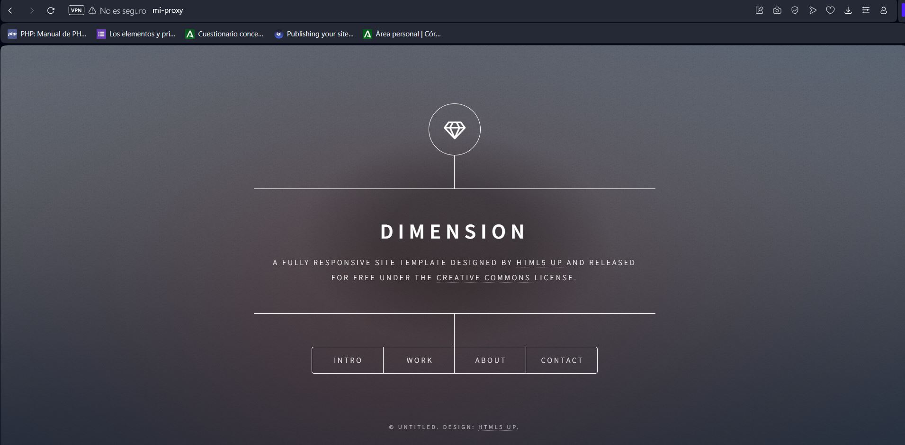
Comprobaciones
Verifica que todo funciona correctamente, usando las herramientas de análisis HTTP para inspeccionar las cabeceras de las solicitudes y respuesta.
Para ello pulsa Control+Shift+C y dirigete a la pestaña Red, sino te aparece nada refresca la página con F5, después selecciona el elemento con el nombre de tu servidor y comprueba que la solicitud devuelva 200 OK como código de estado.
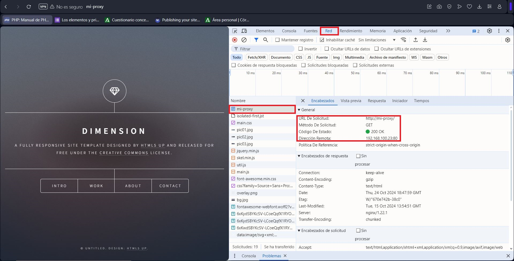
Añadiendo cabecera
Añadiendo nueva cabecera HTTP personalizada que contiene mi nombre. Esto es útil, por ejemplo, para agregar información adicional en las solicitudes que llegan al backend o simplemente para personalizar la respuesta del servidor.
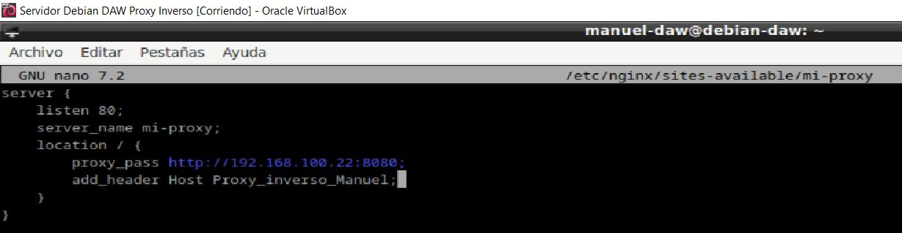
Reiniciamos el servidor y al recargar la página con el cliente deberíamos de visualizar la nueva cabecera.
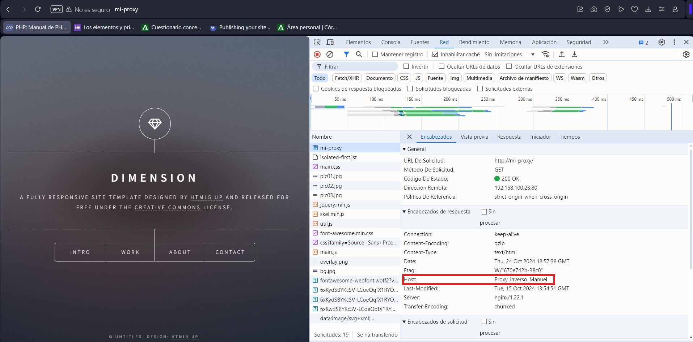